Scientific Classification
| Kingdom | Animalia | Animalia | Animalia |
|---|---|---|---|
| Phylum | Chordata | Animalia | Animalia |
| Clade | Synapsida | Animalia | Animalia |
| Clade | Sphenacodontia | Animalia | Animalia |
| Clade | Therapsida | Animalia | Animalia |
| Suborder | Anomodontia | Animalia | Animalia |
| Clade | Dicynodontia | Animalia | Animalia |
| Clade | Neodicynodontia | Animalia | Animalia |
Taxonomic note: Neodicynodonts are a derived radiation of dicynodonts within Anomodontia, a major clade of nonmammalian therapsids. On Kaimere, their living diversity is represented principally by two major clades: Linguapressura and Testudocyona.
01 · INTRODUCTION
Overview
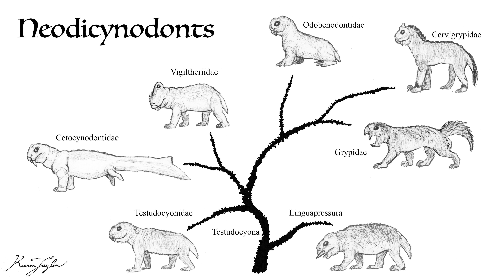
Anomodonts were a very successful clade of nonmammal therapsids that thrived during the Permian Era. They were mostly herbivorous, largely replacing the dinocephalians during the later half of the Permian. Suminia, the so-called Permian Monkey, is perhaps the most famous member outside of the clade's most successful members: the dicynodonts. Dicynodonts had beaks that were toothless, with the exception of a pair of tusks toward the front of the mouth. Dicynodonts were the only anomodonts to survive the Great Dying at the end of the Permian Era, with the notorious Lystrosaurus comprising a vast majority of animal fossils in many formations at the transition between Permian and Triassic.
Neodicynodonts are a diverse radiation of dicynodont therapsids that dominate the terrestrial megafauna of the Permian Continent in Kaimere. Descended from small, primarily fossorial ancestors, they underwent an extensive adaptive radiation following the Dynastic Extinction approximately fifteen million years ago. This event devastated existing ecosystems, creating ecological opportunities that allowed dicynodonts to expand into numerous herbivorous and predatory niches. Although dicynodonts had persisted on the continent for hundreds of millions of years, the extinction marked the beginning of their greatest period of ecological dominance.
Despite their diversity, neodicynodonts retain a remarkably consistent cranial structure. Their bodies have diversified extensively, producing burrowers, cursorial browsers, heavily built grazers, arboreal species, and fully aquatic giants, yet their skulls remain comparatively conservative. This anatomical uniformity reflects both their relatively recent shared ancestry and the functional constraints imposed by their keratinous beaks. Unlike mammals, which possess flexible lips and varied arrangements of teeth, most dicynodonts rely on a beak and specialized tongue to gather and process food. These structures limit the range of cranial modifications available to the lineage, directing much of its evolutionary diversification toward body proportions, locomotion, feeding behavior, and other aspects of soft-tissue anatomy.
02 · DEEP TIME
Evolutionary History
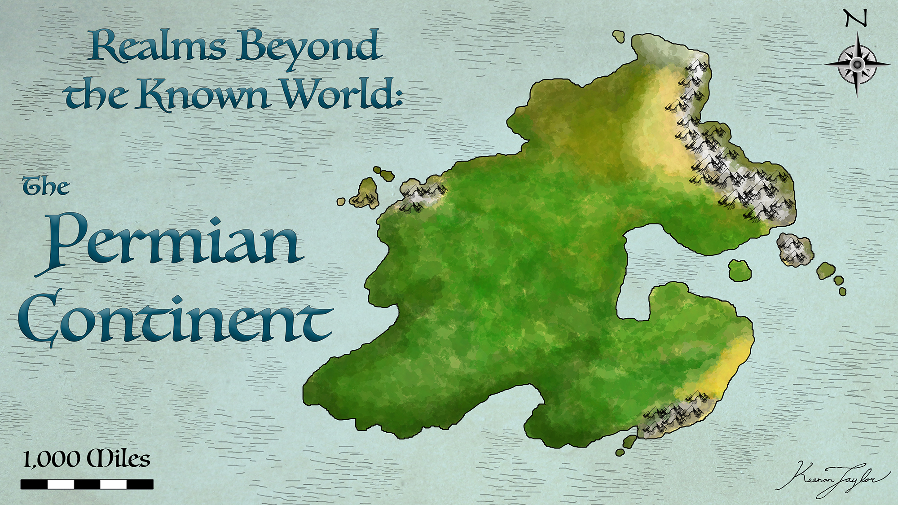
Dicynodonts are most closely associated with the Permian Continent, where they constitute a substantial proportion of the region's large terrestrial fauna. Their distribution, however, extends considerably beyond this landmass. Terrestrial forms occur on mainland Kairul, in northern Ni'Khar, across the Crown of Kairul, and on islands near the North Polar Continent. Aquatic dicynodonts have achieved an even broader distribution, spreading through numerous northern marine environments and occupying ecological roles otherwise associated with marine mammals.
The Known World represents an unusual exception to this widespread terrestrial distribution. There, the mogao is the principal representative of Anomodontia, while the surrounding waters support a greater diversity of aquatic dicynodonts. The only major marine region identified as lacking these animals is the coastal and shallow-water environment of Kaishel.

The modern neodicynodont radiation originated against a background of repeated faunal replacement. Approximately 200 million years ago, near the end of the Permian Dynasty, a large landmass separated from Kairul. One portion became the Permian Continent, which initially retained a fauna dominated by pareiasaurs, small and medium-sized dicynodonts, and gorgonopsid predators. As the continent drifted northward, increasingly cold conditions contributed to the eventual disappearance of its pareiasaurs, which were extinct there by the Early Cretaceous.
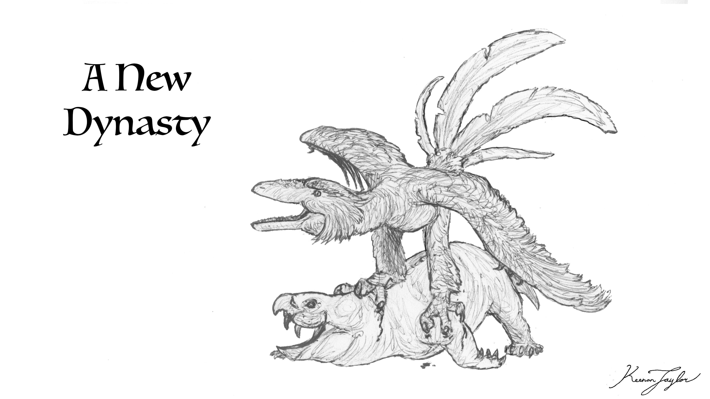
Subsequent introductions brought new organisms into the region. Enantiornithean birds diversified into terrestrial herbivorous and predatory niches, while nontherian mammals arrived approximately thirty million years ago, apparently through dispersal on floating vegetation. These newcomers displaced many of the remaining cynodonts and therocephalians, while dicynodonts persisted as a major component of the herbivore community.
During this period, several dicynodont lineages underwent a comparatively subdued but important adaptive radiation. Their ancestral fossorial lifestyle was retained in some groups, while others evolved into swift browsers, heavily built grazers, arboreal foragers, and aquatic herbivores. The resulting lineages established the evolutionary foundation for the modern neodicynodont clade.
The decisive event occurred approximately fifteen million years ago, when a flood-basalt eruption associated with the Dynastic Extinction devastated ecosystems across the Known World and beyond. The resulting environmental disruption eliminated many established animal lineages on the Permian Continent. In the aftermath, nutrient-rich soils and recovering vegetation provided opportunities for surviving dicynodonts to diversify into the ecological vacancies left by extinct megafauna. Numerous new families emerged, and dicynodonts became the dominant large terrestrial vertebrates of the continent.
03 · DIVERSITY
Clades and Anatomy
Living neodicynodonts are divided into two principal clades: Linguapressura and Testudocyona. These groups differ most conspicuously in their mechanisms of oral food processing and in the subsequent evolutionary radiations they produced. Testudocyona is the more diverse of the two, encompassing most of the large terrestrial dicynodonts of the Permian Continent as well as several important aquatic lineages.
Linguapressura is a distinct clade of dicynodonts characterized by an exceptionally powerful tongue used in food processing. Its members compress food against the rough palate through muscular lingual movements, partially compensating for the absence of conventional grinding teeth. In the Permian Continent fauna, this clade includes the Permian sloths and the enormous Permian oliphaunts. Its separation from Testudocyona reflects the significance of this anatomical specialization, although the available source material does not provide a complete family-level classification for Linguapressura.
Testudocyona is the most successful modern dicynodont radiation on the Permian Continent. Descended from small fossorial ancestors, its members diversified into terrestrial and aquatic environments, producing herbivores, browsers, grazers, omnivores, and specialized predators. Its principal branches include Testudocyonidae, Cetocynodontidae, Vigiltheriidae, Odobenodontidae, Cervigrypidae, and Grypidae. The clade encompasses both relatively conservative burrowing forms and highly derived animals whose appearances and ecological roles differ substantially from those of their ancestors.
Neodicynodonts retain the characteristic cranial organization of their dicynodont ancestors. Their mouths terminate in keratinous beaks, and their teeth are absent except for a pair of prominent tusks in many species. These tusks vary in size and shape according to lineage, sex, and ecological function, serving in display, combat, defense, and, in some cases, the manipulation of vegetation. Because the beak lacks conventional teeth, dicynodonts generally cannot chew food in the manner of mammals. Instead, food processing depends on the interaction between the keratinous beak, a muscular tongue, and a roughened palate. Food may be compressed, manipulated, or partially broken down before being swallowed. Many species consume substantial quantities of vegetation with limited oral processing and consequently depend on extensive digestive systems to extract sufficient nutrients. This arrangement is particularly consequential for the largest herbivores, whose energetic requirements demand nearly continuous feeding. The relatively conservative structure of the skull is one of the most striking features of the Permian Continent's neodicynodonts. Despite their diversity in size, locomotion, and diet, many retain remarkably similar cranial proportions. This pattern reflects both their shared ancestry over the past thirty to forty million years and the functional constraints imposed by their beaked mouths. Unlike mammals, whose flexible lips and cheeks permit extensive variation in the manipulation of food, most dicynodonts rely on a comparatively rigid keratinous feeding apparatus. This restricts the range of possible cranial specializations and helps explain why major evolutionary changes are more apparent in the bodies and limbs of neodicynodonts than in their skulls. Similar constraints are evident in other beaked tetrapods, including the buficorns of the Permian Islands.
Most neodicynodonts retain an anatomically primitive auditory system compared with that of mammals. Their hearing apparatus includes a large stapes, also known as the columella, a substantial tympanic membrane stretched across a notch at the rear of the skull, and jaw bones that retain a role in sound transmission. They are therefore thought to rely substantially on vibrations transmitted through the ground or water, although the extent to which individual species depend on airborne sound remains uncertain. The odobenodont lineage and its close terrestrial relatives, including the griffins and hippogriffs, possess a more sophisticated auditory apparatus. Rather than enlarging the exposed tympanic membrane or developing external ears, these animals have evolved a deeply recessed auditory chamber formed by the squamosal, quadratojugal, and surrounding cranial bones. A rigid cartilaginous rim supports a narrow external opening, protecting the tympanic membrane while concentrating incoming sound. Internally, an elongated lagena containing densely packed sensory hair cells improves frequency discrimination. Extensive cranial air sinuses surrounding the auditory capsule act as resonating chambers, amplifying biologically significant frequencies while reducing extraneous noise. These adaptations also contribute to sound localization, allowing the animals to distinguish the direction of approaching individuals, predators, and other environmental disturbances. This auditory specialization is particularly notable because it demonstrates that substantial sensory refinement can evolve without replacing the ancestral single-ossicle middle ear.
04 · SPECIES ACCOUNTS
Known Diversity
The following accounts document representative felids recorded in the encyclopedia. Select a species to consult its individual natural history and descriptive account.
Permian Sloth
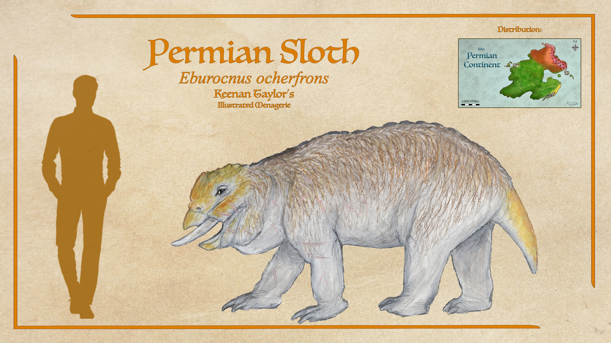
Eburocnus ochrefrons
The permian sloth is also low-slung, though these dicynodonts aren't low-browsing specialists: they prefer to feed on roots, tubers, and other food on the ground. They have the keenest sense of smell among dicynodonts, and are prolific diggers. Though they can't burrow as well as their ancestors or smaller living kin, but they do make large dens. Unlike other dicynodonts, permian sloths don't mate for life: the female remains with the male after mating, and once she gives birth, she leaves to recover and get ready for the next season while he takes over childcare. They are most common in the north, with better soil to dig dry burrows and a greater abundance of hardy subterranean food than in the richer forests to the south, though they can share territory with others mentioned above since each specializes in different levels of foliage.
Read species article →Permian Oliphaunt
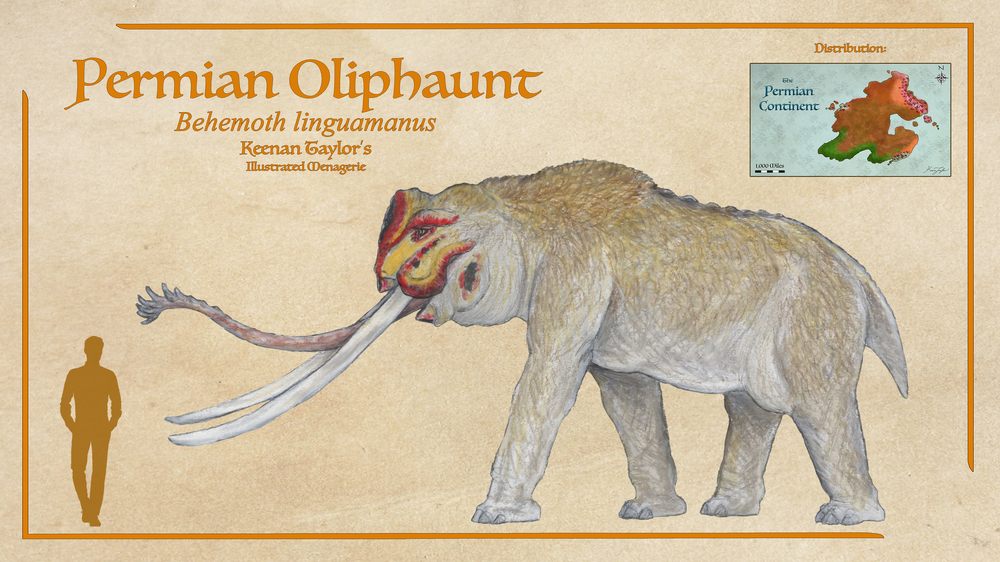
Behemoth linguamanus
While permian sloths use their tongue for chewing like a hydraulic press, the permian oliphaunt's hyolingual apparatus trades strength for precision: their tongue is almost as long as their entire body. The tip forms a broad hand: thirteen digits can extend to grab and manipulate foliage into reach of their powerful beak, or they can retract the digits so the end forms a spoon they can use to drink. Aside from their tongue and great size, which in the largest bulls can exceed fourteen tons, their tusks are another conspicuous feature. They can use them to help uproot trees or deter predators, though the primary utility is in intraspecific combat. Bulls have larger tusks which they use to both display their virility and to fight other bulls. Cows live in small herds of related animals, attended by a single bull. Though the bull lives with the herd, he is primarily responsible for protecting the young. The permian oliphaunt is found throughout the continent, though they are \most common in the boreal forests to the north.
Read species article →Testudocyonids
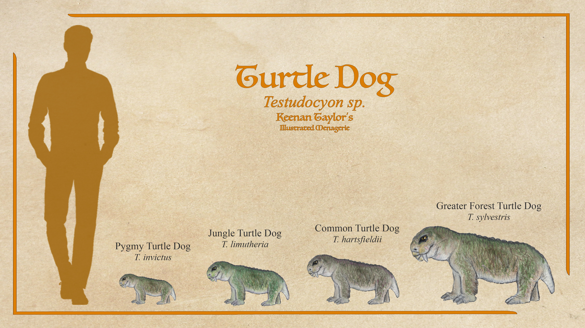
Testudocyonidae sp.
Although Testudocyona rapidly diversified into a wide range of niches, the ancestral bodyplan of this lineage as small burrowers is retained by several families. Best understood by the Assembly is the nominative turtle-dog Testudocyon, and is believed to more or less represent what most if not all modern dicynodonts looked like around thirty to forty million years ago. They live in complex burrows and are quite social. They are generalist feeders. The only teeth dicynodonts retain are their tusks, so they cannot chew. They have a strong tongue and rough upper palate they can use to break down some food, but will often just swallow it whole. With a fully endothermic metabolism they need a lot of food. Testudocyon has around a dozen species scattered throughout the continent, though they are most abundant in the north where more arid conditions is better for their subterranean lifestyle.
Read Pygmy Turtle Dog article → Read Jungle Turtle Dog article → Read Common Turtle Dog article → Read Greater Forest Turtle Dog article →Sharktail Hippopotamus
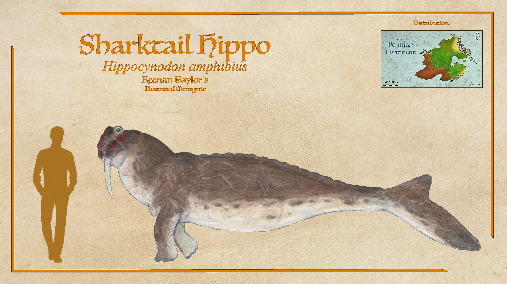
Hippocynodon amphibius
Hippocynodonts are a branch within the cetocynodonts, sharing a common ancestor around thirty million years ago. They are also aquatic grazers, though they prefer swamps and other freshwater wetlands to open water, though one species is marine. They retain more basal front limbs, which they use to walk along the substrate. Their tail possesses a fin like Cetocynodonts, though their motion in the water is primarily walking. The sharktail hippo is one of their most recognized members.
Read species article →Sharktail Walrus
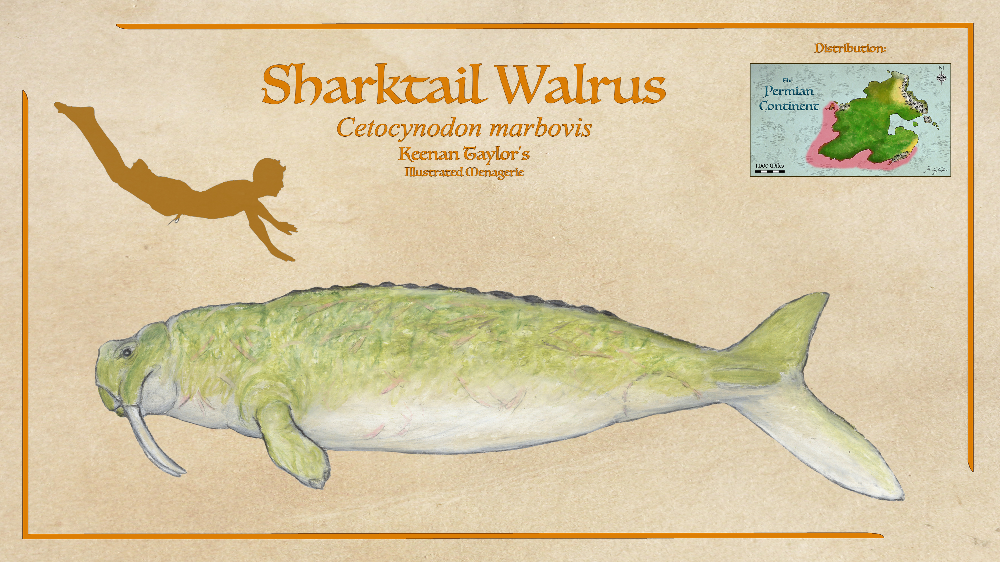
Cetocynodon marbovis
Cetocynodonts were already familiar to peoples of the known world in the form of the mogao: a seagrass specialist like their Permian Continent ancestors. They swim with lateral undulations of a lateral tail fluke. Several species are found in the warmer waters of the south and west cost of the continent, and they have spread into the tropics and throughout much of the planet. While sirenians are quite abundant in the known world, their niche is generally occupied by cetocynodonts. Cetocynodon itself has several species which live much like the mogao as seagrass grazers. While one if found in the Permian continent called the sharktail walrus in the southwestern waters of the continent, the most recognized in the mogao of the Known World.
Read species article →Drokotoora
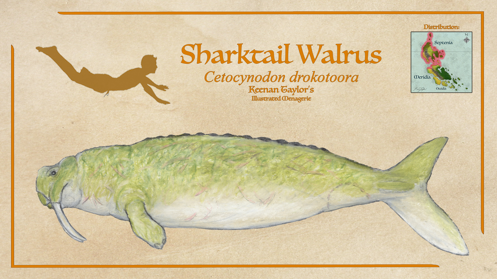
Cetocynodon drokotoora
Though native dicynodonts and other anomodonts are all below the conventional Assembly definition of megafauna, there are a few giant dicynodonts on the dragon archipelago. All of these are aquatic. In the seagrass meadows between the Occidian and Meridian Islands and through much of the coastlines of Septenia and the Hob Islands, a close relative of the mogao called the drokotoora or Permian Islands skarktail walrus, is a common sight. They live much like their known world and Permian Continent cousins.
Read species article →Mogao
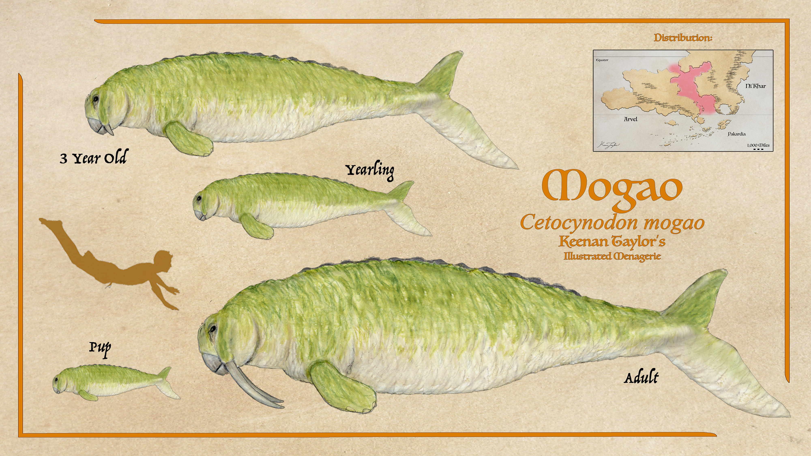
Cetocynodon mogao
The mogao is the only dicynodont found in the Known World. They are migrants from the distant Permian Continent, a large land mass isolated from the portal to Earth since the era it was named after. They have long tusks, a beak, a tongue described as being covered in horn teeth, horned wrinkled skin, and a fluked tail. Early Assembly accounts describe this as a walrus or sirenian of some sort. Some Khalin legends say they are a hybrid of the two and a sea turtle. The truth is they came from the far north, beyond the equator and share kinship with nothing else in the known world.
Read species article →Blue Watcher
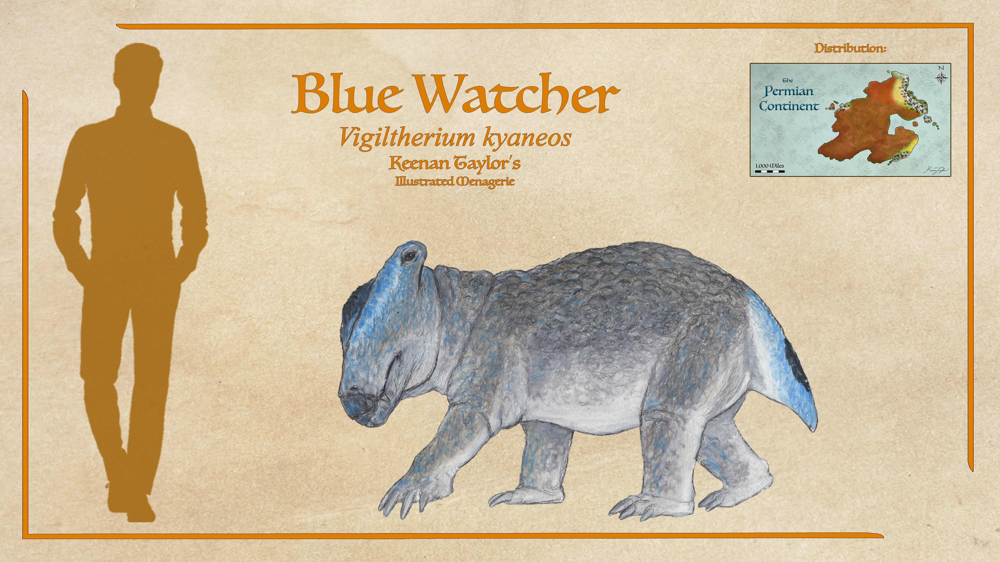
Vigiltherium kyaneos
The watchers are another abundant dicynodont family, with the blue watcher being by far the most common. They have a fairly basal bodyplan, being short and stocky, though they are one of the few dicynodonts with a derived skull. Their heads are set on stalks to allow them to see all around as they browse on low-growing vegetation with a very wide and powerful beak. A similar configuration is seen in the unrelated fabadonts of Kaishel, and lead to an initial assumption that they were relatives, though it didn't take long to confirm these were yet another dicynodont and an example of convergent evolution. They live in large herds, though spend most of their days broken off into smaller troops and meet up every few days. Though they don't seem particularly intelligent, they are socially complex and quite affectionate with even unrelated individuals. Their browsing companions in small bands are recurring, though often these fellows aren't relatives and indeed sometimes they don't seem to like some related animals, and the naturalists studying them said friend was really the only appropriate term.
Read species article →Resplendent Walrus
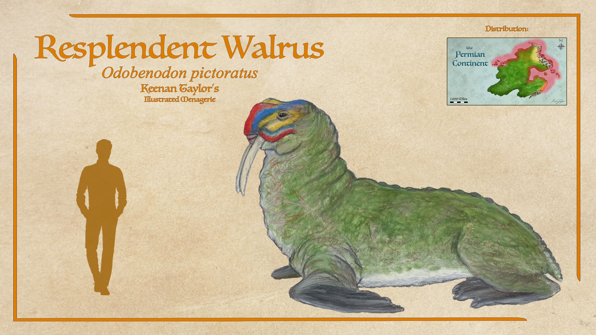
Odobenodon picturatus
The resplendent walrus is the most abundant species found on the northern shores of the Permian continent and throughout the northern hemisphere. They aren't as proficient on land as smaller species of Odobenodon, but their size and strength means they easily dominate the shore space by the water and push smaller species further up the beach, not only putting them in harms way of terrestrial predators but also forcing them to travel more to feed. They are much more social than most dicynodonts, and related males and their mates share in communal childcare responsibilities. Only the largest owlbears pose a threat on land, and even they are wary of an odobenodont bull.
Read species article →Silverback Walrus
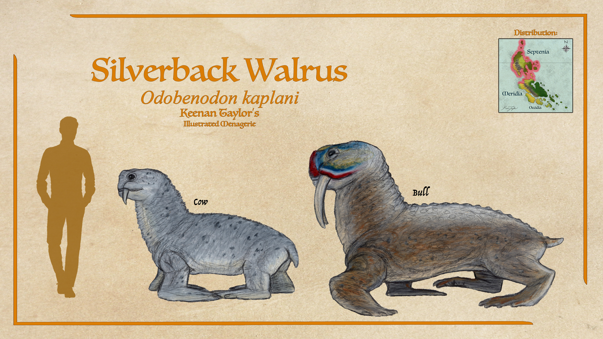
Odobenodon kaplani
Silverback walruses are very common, ranging down to northern Meridia during the winter months. They are of staggering abundance. Cows live in large herds, which bachelor herds of related males woo and defend during the mating season. Being quite proficient on land, able to move about with surprising proficiency, some populations actually get a majority of their diet from inland plants, though they prefer kelp, krakengrass, and seagrasses. Cows and juveniles are uniformly dark grey with black speckles, while males develop russet sides, the nominative pale backs, and bright colorful swollen faces upon maturity.
Read species article →Roseflank Walrus
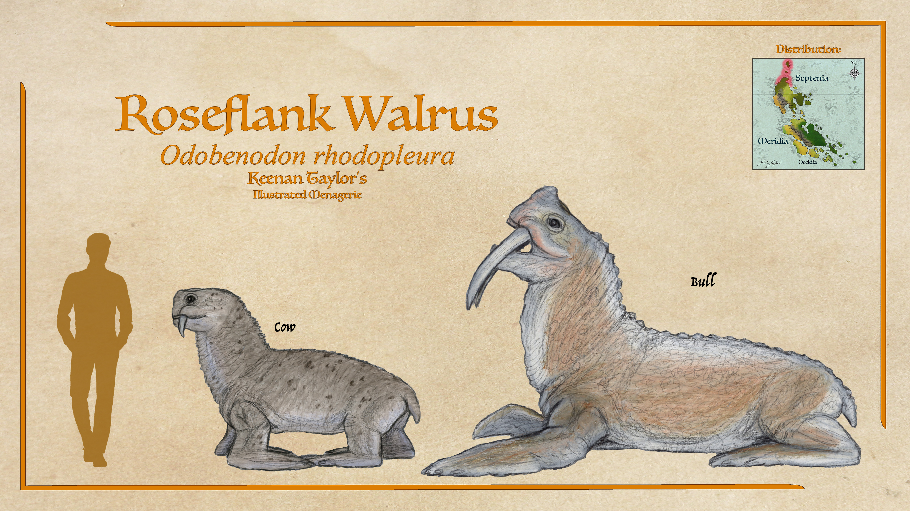
Odobenodon rhodopleura
Roseflank walruses are the larger of the two native species and are far more restricted. They are only found in the Hob Islands and northern coast of Septenia. Males of this species are solitary, and while female roseflanks are a bit larger than silverback cows, bulls are enormous by comparison. Roseflanks young and cows are also grey, though a warm grey identifying them from the cool grey of Silverbacks, with only the large bulls taking on the rose gold sides and ivory backs. The leading clan of the island reside in a city called Walrusport, and their sigil and colors are based on these mighty beasts, even though the port is so large and busy in modern times it has driven off the sea creatures that gave the city its name.
Read species article →Marine Oliphaunt
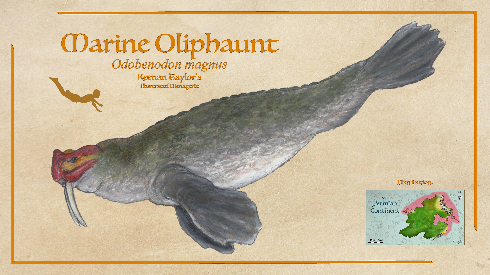
Odobenodon magnus
The marine oliphaunt is the largest dicynodont on Earth or Kaimere and a relative of the resplendent walrus. They are too large to go inland to rest. Within the horsetail forests they are safe from elasmosaurs and mosasaurs. The only predator large enough to threaten them in the dense forests itself is the jörmungandr, a giant marine madtsoiidae descendent, and even these 70 foot snakes must be wary of the oliphaunt's tusks.
Read species article →Peryton
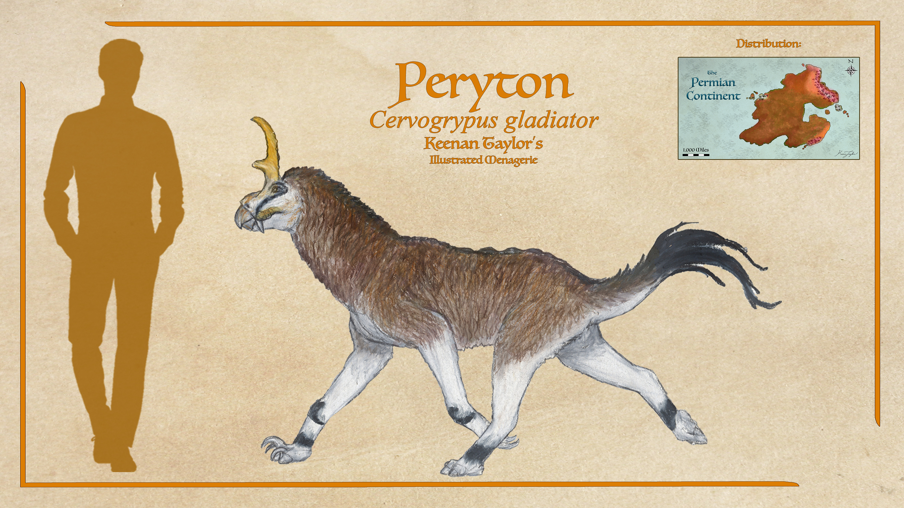
Cervogrypus gladiator
Most abundant cervigrypid is the peryton, also called the Permian stag for the hornlets over their eyes. These browsers and grazers feed on anything in their reach. Though running is their primary defense, they sometimes bring claws and small tusks to bear. Initially it was assumed that their claws and tusks were for predator defense, since males and females both have claws and fangs, and sexual selection usually sees enhanced weaponry only in males. They also form monogamous pairs. Later study showed perytons of both sexes are physically combative and surprisingly violent with others of the same sex: females for prime feeding opportunities while out browsing, males while guarding their young, and both will attack other members of the regional herd with minimal prompting. For all this aggression, they almost invariably flee predators, though if pressed can defend themselves quite well.
Read species article →Hippogriff
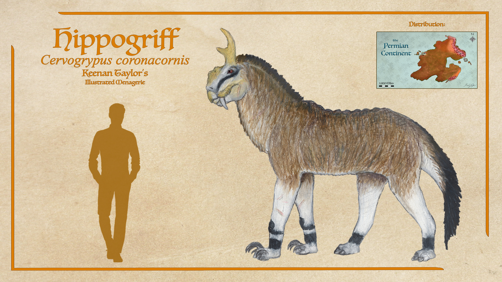
Cervogrypus coronacornus
The hippogriff is especially common in the permian continent's interior, preferring more open space, though they also frequent wetlands. They live in smaller herds than perytons, though in most matters lead similar lives. Though they will flee predators, their claws and beak are more formidable weapons and they are substantially larger, and both sexes will readily fight predators if morale holds or if they must protect their young.
Read species article →Questing Beast
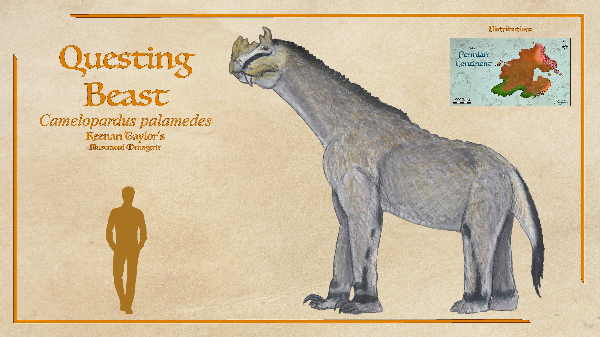
Camelopardus palamedes
Largest of the hippogriffs, and the tallest animal on the continent at least at resting head height, is the questing beast. These high browsers are most common in the arid rain shadow of the northern mountains, though lone subadults or mated pairs are known to wander throughout the continent. Like other testudocyonans the pair generally remain monogamous for life.
Read species article →Golden Griffin
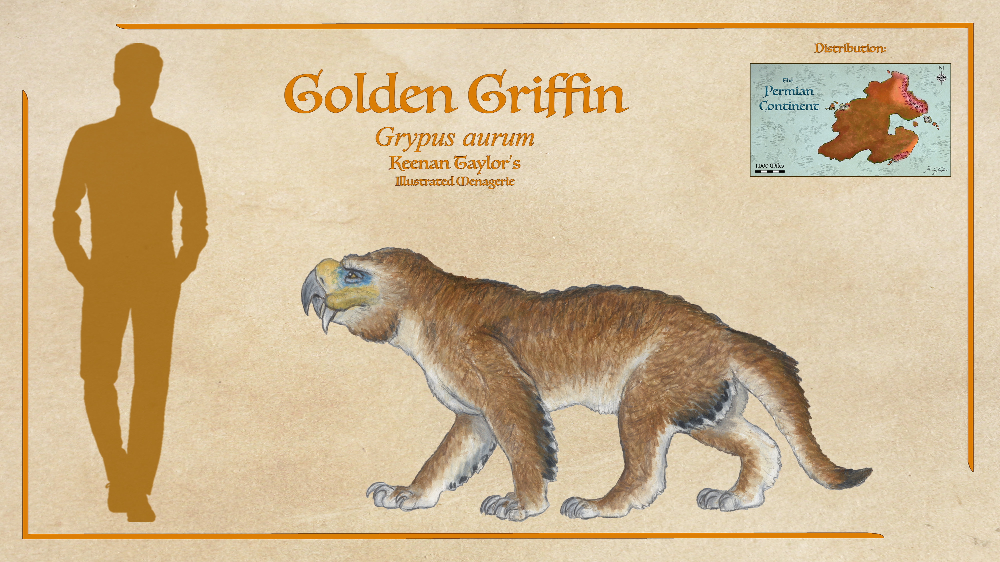
Grypus aurum
The apex predators of the continent are also dicynodonts in the order Testudocyona: these are the griffins. Though several remain fairly small, there are two larger species of griffin in the genus Grypus: Most abundant is the common or golden griffin. This ambush predator is highly adaptable, being present in forests, swamps, and highland habitats. Griffins are burly animals, weighing between three and four hundred pounds and being astonishingly muscular. They can hunt small game but are generally macro-predators: grappling prey much larger than themselves and killing with a swift bite to the throat or back of the neck with hooked beak and fangs. Though they can move fast in a sprint and their pounce hits with sufficient force to break bone, they aren't cursorial and tire if they have to run or fight for too long. Because of this, they are dependent on setting up a good ambush. Given their dominance, it's no wonder that cursorial animals like hippogriffs are so common, and why even though they have claws and fangs of their own they generally would rather flee than try to fight.
Read species article →Silver Griffin
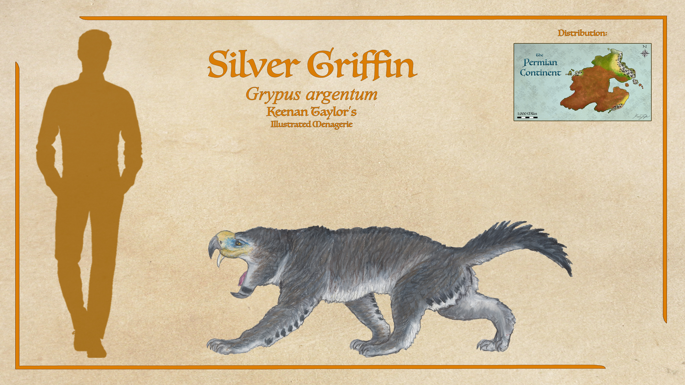
Grypus argentum
The smaller silver griffin is restricted to the dense forests toward the south and west coasts. They are ambush hunters specialized in attacking from the trees. They tend to prefer smaller game than their larger cousins, though have been recorded taking prey up to twice their size. Though all griffins can see at night, silver griffins are particularly nocturnal, especially in regions where their range coincides with common griffins so as to avoid competing with them. Compared to their cousins, they are more proficient climbers and can get higher due to their smaller size. Though they prefer hunting other dicynodonts, four of the seven Assembly agents killed in the study of the continent were killed by silver griffins, showing they are used to viewing people as prey.
Read species article →Greater Owlbear
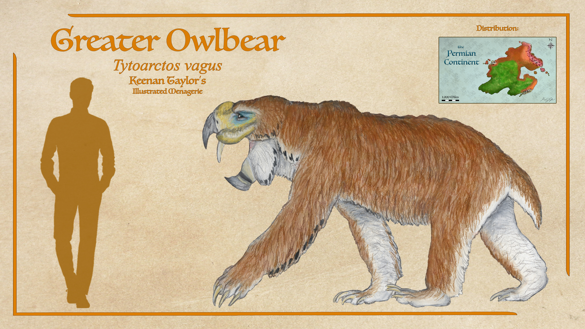
Tytoarctos vagus
By far the largest of the griffins is the greater owlbear. The biggest males can stand up to six feet at the shoulder and weigh just over a ton, though that is the record holder and most males are five feet tall and around a thousand pounds, with females being two-thirds the size. Though predatory, they are more comfortable with omnivory than they hypercarnivorous cousins. Their long claws make them proficient burrowers, which they use to dig up prey like turtle-dogs and Permian sloths. While formidable in size, they tend to be mesopredators, targeting prey smaller than themselves, though this still includes a lot of megafauna. They have been recorded bringing down even the mighty oliphaunt, though in this instance the herbivore had been injured in a fight with another bull.
Read species article →Common Owlbear
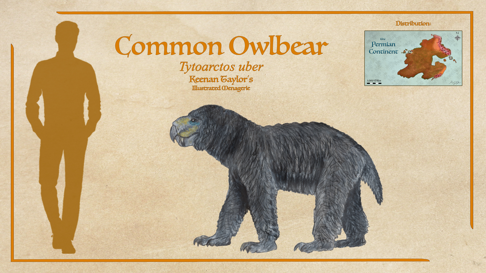
Tytoarctos uber
Black or common owlbears are a more abundant cousin. Like the silver griffin, they are most common in the forests, though their range is throughout the continent. Despite the name, they come in a wide range of colors, including brown, grey, and white, though black is most common. They are proficient swimmers and climbers. They are the most herbivorous of the griffins, and only occasionally will they scavenge or tackle opportunistic game. Owlbears are skittish animals, preferring to flee a threat, though they can be quite dangerous if cornered.
Read species article →05 · CLASSIFICATION
Taxonomic Notes
This section records uncertainties, disputed relationships, and proposed revisions to the family's classification. Confirmed taxa should be distinguished from tentative identifications and provisional placements.
Where an animal's appearance suggests membership in Felidae but its ancestry has not been established, resemblance alone should not be treated as sufficient evidence of taxonomic inclusion.